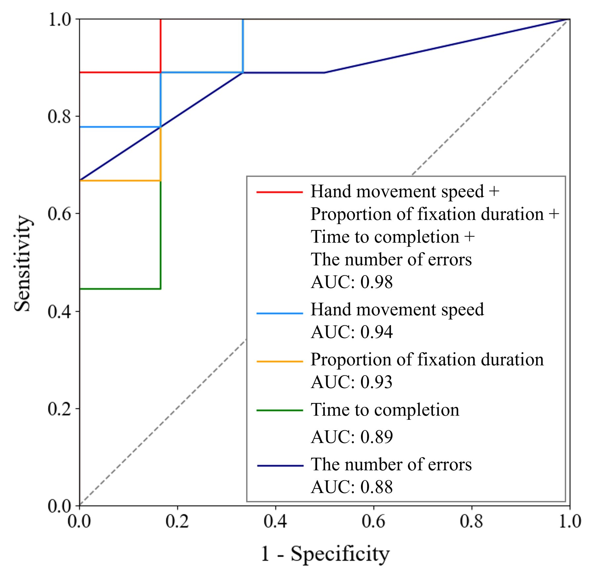

TRYTry the Virtual Kiosk TestVirtual Kiosk Test 체험하기
This is a simplified browser version of the task we ran in VR. In the study, older adults completed it wearing a head-mounted display while eye and hand movements were tracked.
VR에서 진행한 과제를 브라우저용으로 단순화한 버전이에요. 연구에서는 고령 참여자가 HMD를 쓰고 이 과제를 수행하는 동안 시선과 손 움직임을 추적했습니다.
WATCHWatch the VR versionVR 버전 보기
01Why a kiosk?왜 키오스크인가?
The earliest functional signs of MCI show up in complex everyday activities (IADL) that need memory, attention and executive function at once. Ordering at a kiosk is one of these tasks, it is now part of daily life for older adults, and every step has a correct answer — so behavior can be read against the task context.
MCI의 가장 이른 기능 저하는 기억·주의·집행기능이 함께 필요한 복잡한 일상생활(IADL)에서 나타납니다. 키오스크 주문은 그런 과제이고, 이제 고령자의 일상이 되었으며, 단계마다 정답이 있어 행동을 과제 맥락에 비추어 해석할 수 있습니다.

02From raw signals to biomarkers원시 신호에서 바이오마커로
Gaze was sampled every 100 ms as 2D coordinates on the kiosk. On its own a coordinate means little, so we fused it with the task context at the data level — button positions, which button was correct, what was being interacted with — and computed the proportion of fixation duration on the correct target.
시선은 100ms마다 키오스크 위의 2차원 좌표로 기록됩니다. 좌표만으로는 의미가 없어서, 데이터 수준에서 과제 맥락(버튼 위치, 정답 버튼, 상호작용 대상)과 융합해 정답 대상의 주시 지속 비율을 계산했어요.

03Results결과

- All four features differed significantly: slower hands (P=.004), lower fixation proportion (P=.04), longer completion time (P=.004), more errors (P=.001) in MCI.4개 feature 모두 유의한 차이: MCI군은 손이 느리고(P=.004), 주시 비율이 낮고(P=.04), 완료 시간이 길고(P=.004), 오류가 많았어요(P=.001).
- SVM on all four: accuracy 93.3%, sensitivity 100%, specificity 83.3%, precision 90%, F1 94.7%.4개 feature SVM: 정확도 93.3%, 민감도 100%, 특이도 83.3%, 정밀도 90%, F1 94.7%.
04My contribution나의 기여
- Developed the VR kiosk in Unity and the eye/hand logging pipeline.Unity로 VR 키오스크와 시선·손 로그 파이프라인을 개발했습니다.
- Designed the context-based gaze feature, ran the statistics and the machine-learning models, and wrote the paper as first author.맥락 기반 시선 feature를 설계하고, 통계·기계학습 분석을 수행했으며, 제1저자로 논문을 작성했습니다.